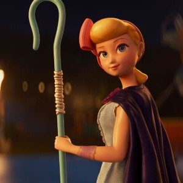

Toy Story 4
Synopsis
Woody and the gang go on a road trip with new toy Forky, who's convinced he's trash and doesn't yet understand his role in the world. Along the way, Woody is unexpectedly reunited with independent spirit Bo Peep and finds himself faced with a decision, and a future he never imagined.
Characters
Woody
 Played by
Tom Hanks
Played by
Tom Hanks
He is a vintage cowboy doll that originally belonged to a boy named Andy Davis. As Andy's favorite since kindergarten, Woody served as the leader of Andy's toys, a position he upheld by looking out for each member of the group. When Andy enters adulthood and leaves for college, Woody is donated to a little girl named Bonnie Anderson. He remains with Bonnie for some time, before choosing to become an owner-less antique devoted to helping lost toys find owners, alongside his girlfriend Bo Peep.
Buzz Lightyear
 Played by
Tim Allen
Played by
Tim Allen
He is a spaceman action figure originally belonging to Andy Davis. Buzz was created during a time where astronauts were especially popular amongst children. His arrival in the original Toy Story created conflict with Andy's favorite toy Sheriff Woody, though this rivalry would eventually blossom into a lifelong friendship.
Forky
 Played by
Tony Hale
Played by
Tony Hale
An actual spork-turned-craft-project, Forky is pretty sure that he doesn't belong in Bonnie's room. Unfortunately, every time he tries to get away, Woody yanks him back into an adventure that he'd rather skip. Forky is a toy that Bonnie made out of a disposable spork, so he's facing a crisis. He wants to fulfill his purpose as a spork, but now has a new toy purpose thrust upon him.
Bo Peep
 Played by Annie PottsBo is the romantic interest (later girlfriend) of Woody, providing a calm and loving comfort whenever he is overwhelmed. She is noted for using her shepherdess crook to hook her cowboy and bring him closer in a romantic way. In private, she is a great deal more daring with her words and actions, which Woody seems to be quite fond of. She and her sheep were bought along with the lamp not too long before Molly was born, due to the baby being scared of the dark, which "broke every toy's heart", according to Woody. The lamp comforted Molly and she would often have her hand lay on Bo's feet.
Woody: "Being there for a child is the most noble thing a toy can do."
Comments
How would you rate Toy Story 4?